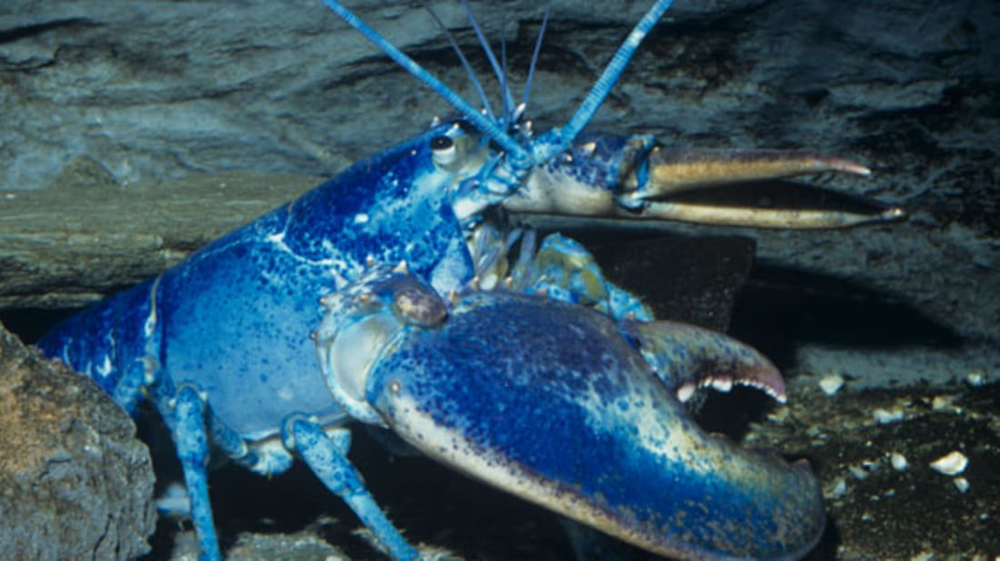
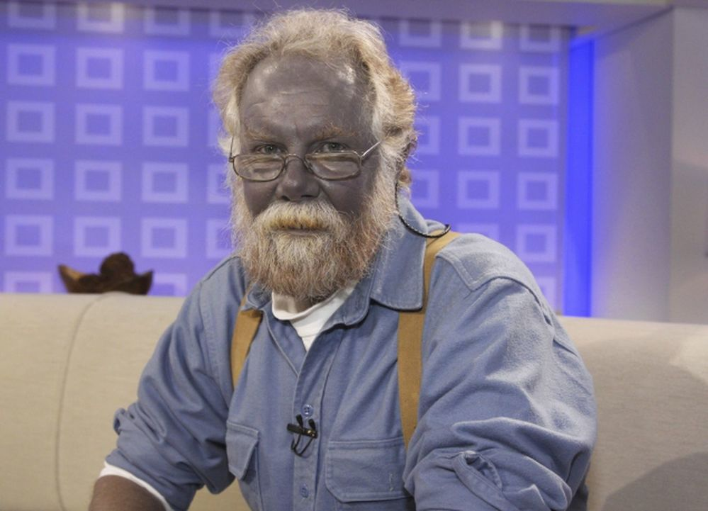
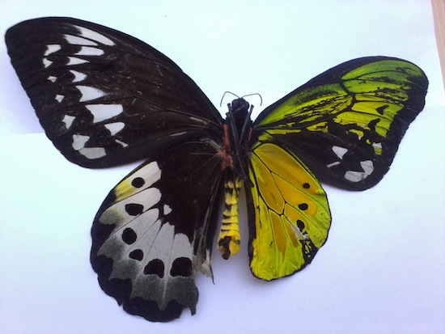

Вікторина на тему "Кольори в геномі організмів"
Після натискання кнопки Продовжити Вам буде задані 9 запитаннь з варіантами відповіді "Так" чи "Ні". На кожне запитання у Вас є необмежена кількість часу. Доти ви не натисните кнопку "Далі" Ви можете міняти свій варіант відповіді. Після кожного запитання Вам буде слайд з поясненням щодо нього. Вкінці вікторини Вам покажуть Ваші результати
Чи правда що люди з блакитним кольором очей - родичі?
Всі люди з блакитним кольором очей – дуже далекі родичі. Такий колір очей виходить в результаті мутації гена HERC2. Виникла така мутація приблизно 6-10 тисяч років тому на Близькому Сході.
Чи бувають блакитні лобстери?
Близько 1 із 4.000.000 лобстерів народжується з рідкісною мутацією, яка фарбує їх у блакитний колір
Чи існують люди з зеленим кольором шкіри?
Людей з зеленим кольором шкіри не існує. Проте у США існувала сім'я "Синіх фугатів" Кентуккі члени якої мали синій колір шкіри. Вони малу шкіру такого кольору через рідкісний розлад крові під назвою Метгемоглобінемія. Це стан, при якому в крові міститься надмірна кількість Метгемоглобіну - гемоглобіну, який не може транспортувати або розподіляти кисень. Зовнішнім симптомом цієї хвороби є синій колір шкіри.
Чи правда що у всіх метеликів праве крило має той самий малюнок що й праве?
Метелики з двома абсолютно різними малюнками на крилах - гермофродити. Одне крило має малюнок - чоловічої статі, а інше - жіночої
Чи правда що більшість генів які відповідають за колір очей беруть участь в утворенні меланіну?
Більшість генів, пов'язаних з кольором райдужної оболонки, беруть участь в утворенні, транспорті та зберіганні меланіну, тому що саме від меланіну залежить колір райдужної оболонки
Чи правда що в холодних та гарячих країнах преважають люди з карими очима?
У найспекотніших країнах та найхолодніших країнах більшість людей з карии очима. Це пояснюється потребою захиститися від сонячних променів, у тому числі від променів відбитих від сніжного покриву.
Чи правда що у первіснх людей переважав світлий колір шкіри?
Давні предки сучасної людини жили, в більшості своїй, на території африканського континенту. Їм доводилося захищатися від руйнівної дії УФ-променів, тому у перших людей переважала темніша шкіра і темніші очі
Чи правда що при Альбінізмі людина має дуже світлу шкіру і волосся та червоні очі?
При Альбінізмі людина має дуже світлу шкіру і волосся та червоні очі. Це відбувається через те що через Альбінізм організм перестає виробляти меланін, який фарбує волосся, шкіру. Рогівка ока - стає прозорою, а червоними є кров'яні сосуди, що знаходяться за нею.
Чи правда, що колір волосся майже повністю залежить від генетики
Як колір волосся, так і кучерявість вважаються практично повністю визначеними генетично - внесок ДНК в розвиток цих ознак досягає 97 відсотків.